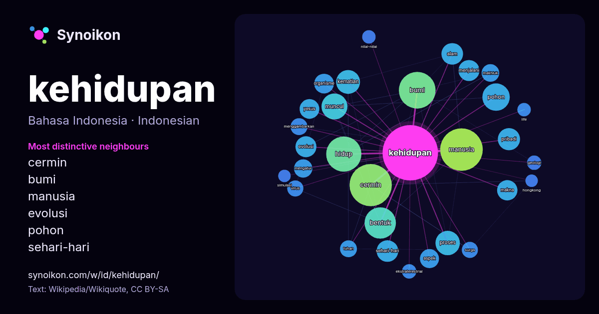

Bahasa Indonesia · kata populer
kehidupan
“life” · Kata-kata di sekitarnya dalam 1062 kemunculan dari Wikipedia, Wikiquote.

Tetangga paling khas
- cermin 59×
- bumi 21×
- manusia 18×
- evolusi 15×
- pohon 15×
- sehari-hari 14×
- organisme 13×
- makna 12×
- hidup 12×
- menjalani 12×
- aspek 11×
- yesus 11×
- pribadi 11×
- bentuk 9.9×
- kematian 9.7×
- surga 9.4×
- mengatur 9.1×
- makhluk 9.1×
- ekstraterestrial 8.9×
- muncul 8.5×
× = berapa kali lebih sering daripada di teks Wikipedia umum.
Tetangga paling sering
- manusia 70
- cermin 69
- bumi 52
- hidup 48
- bentuk 38
- orang 35
- masyarakat 32
- pohon 29
- muncul 26
- dunia 23
- proses 23
- kematian 22
- memiliki 20
- pribadi 19
- alam 18
- sehari-hari 18
- sistem 18
- evolusi 17
- menjalani 17
- makna 16
Dalam konteks
- sel inang, serta kemungkinan adanya kehidupan luar bumi, yang mungkin sangat berbeda dari kehidupan di Bumi. Kehidupan tersebar di seluruh Bumi, di udara Wikipedia snippets · Kehidupan
- surya yang tenang dari kehidupan rohaniwan di pedesaan Hampshire, dan berita tentang perjalanan mereka ke luar negeri dan kehidupan mewah mereka di London Wikipedia snippets · Jane Austen
- terpecahkan dalam astronomi Apakah kehidupan dapat muncul di tempat lain? Apa saja syarat-syarat bagi munculnya kehidupan? Apakah ada eksoplanet yang serupa Wikipedia snippets · Kehidupan ekstraterestrial
- Makna kehidupan atau arti kehidupan (bahasa Inggris: the meaning of life) adalah kata yang merujuk pada signifikansi kehidupan atau keberadaan secara umum Wikipedia snippets · Makna kehidupan
- … isme (dari bahasa Yunani: ὀργανισμός, organismos) adalah setiap entitas individual yang mampu menjalankan fungsi-fungsi kehidupan. Semua Wikipedia snippets · Makhluk hidup
- evolusi, serta persebaran kehidupan. Inti dari biologi bertumpu pada lima tema mendasar: sel sebagai unit dasar kehidupan; gen dan hereditas sebagai Wikipedia snippets · Biologi
- G30S/PKI dan pentingnya Pancasila sebagai dasar negara Indonesia dalam kehidupan berbangsa dan bernegara. Diketahui pada peristiwa tersebut, enam jenderal Wikipedia snippets · Hari Kesaktian Pancasila
- "śīla" berarti prinsip atau asas. Pancasila merupakan rumusan dan pedoman kehidupan berbangsa dan bernegara bagi seluruh rakyat Indonesia. Lima ideologi utama Wikipedia snippets · Pancasila
Kata lainnya
- air
- anjing
- bahasa
- emas
- iklim
- jantung
- jembatan
- kebenaran
- kekuasaan
- keluarga
- kematian
- kereta
- kerja
- kesehatan
- kesenian
- kucing
- lingkungan
- makanan
- sains
- sejarah
- tuhan
- uang
Dihitung sebelumnya pada 2026-10-09 dengan pengaturan bawaan (±5 kata, korpus sedang). Peta interaktif dapat memperbaruinya dengan data langsung.
Antarmuka diterjemahkan mesin; koreksi dipersilakan.